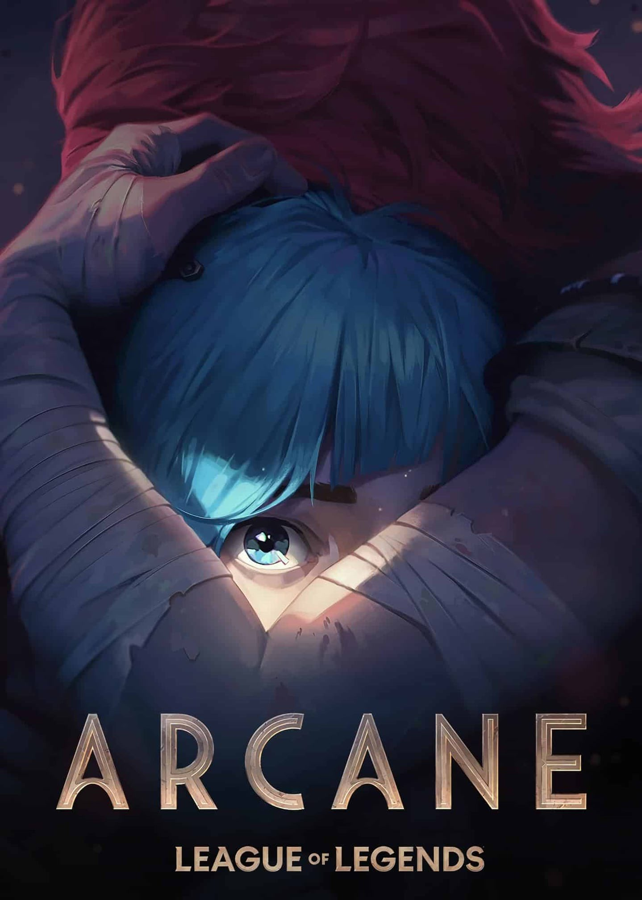

Arcane >
⭐ 9/10 |
Rate
Season 1 streaming on Netflix
You don't need to be an anime fan or a gamer to appreciate the magic of Netflix's mega-hit “Arcane.”
Based on the online multiplayer game “League of Legends,” the show is surprisingly accessible, with
a gorgeous mix of 2D and 3D animation, compelling characters, and a rich narrative that tackles big
ideas while staying grounded in human relationships. The first season won over critics and fans
alike, scoring a 9.0 rating on IMDb and quietly winning a Primetime Emmy for Outstanding Animated
Program. Season 2 finds conflict simmering between the “haves” of utopian city Piltover and the
“have-nots” of the underground Zaun, but also between estranged sisters Jinx (Ella Purnell) and Vi
(Hailee Steinfeld). Although the series concludes in this final season, Linke has teased there are
more “League” stories to tell.